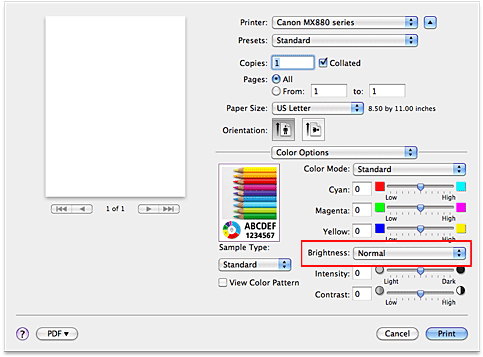

|
Light is selected |
Normal is selected |
Dark is selected |
The procedure for adjusting brightness is as follows:
-
Select Color Options from the pop-up menu of the Print Dialog
-
Specify the brightness
Select Light, Normal, or Dark for Brightness. The current settings are displayed in the settings preview on the left side of the printer driver.
 -
Complete the setup
Click Print.
When you execute print, the data is printed at the specified brightness.
 Important
Important
-
If you are using Mac OS X v.10.6.x or Mac OS X v.10.5.x and you select ColorSync for Color Matching, then the Brightness appear grayed out and is unavailable.
If you are using Mac OS X v.10.4.11 and you select ColorSync or None for Color Correction, then Brightness appear grayed out and is unavailable.